OBS: Este projeto é baseado em um competição do Kaggle. Os datasets estão presentes em https://www.kaggle.com/competitions/talkingdata-adtracking-fraud-detection/data. Todo o trabalho foi realizado em linguagem R e o relatório final foi obtido através do Rmarkdown.
Analisar os dados disponibilizados pela empresa Talkingdata e criar um modelo de machine learning que determinará se um clique é fraudulento ou não, usando redes neurais e random forest.
O risco de fraude está em toda parte, mas para as empresas que anunciam online, a fraude de cliques pode acontecer em um volume avassalador, resultando em dados de cliques enganosos e dinheiro desperdiçado. Os canais de anúncios podem aumentar os custos simplesmente quando pessoas ou bots clicam nos anúncios em grande escala, o que na prática não gera o resultado esperado. Com mais de 1 bilhão de dispositivos móveis em uso todos os meses, a China é o maior mercado móvel do mundo e, portanto, sofre com grandes volumes de tráfego fraudulento. Neste projeto, utilizaremos um dataset disponibilizado pela empresa Talkingdata, para construir uma análise de dados e um modelo de machine learning que classifica um clique como sendo fraudulento ou não.
train_sample: Amostra do conjunto com os dados históricos fornecidos. Usaremos uma amostra aleatória com 200 mil registros, por limitações de hardware, o que diminuirá a perfomance do modelo preditivo, porém não fará diferença para fins didáticos.
library(ggplot2)
library(neuralnet)
library(caret)
library(dplyr)
library(randomForest)
library(data.table)
library(knitr)data <- fread("train_sample.csv", header = T)set.seed(15)str(data)## Classes 'data.table' and 'data.frame': 100000 obs. of 8 variables:
## $ ip : int 87540 105560 101424 94584 68413 93663 17059 121505 192967 143636 ...
## $ app : int 12 25 12 13 12 3 1 9 2 3 ...
## $ device : int 1 1 1 1 1 1 1 1 2 1 ...
## $ os : int 13 17 19 13 1 17 17 25 22 19 ...
## $ channel : int 497 259 212 477 178 115 135 442 364 135 ...
## $ click_time : POSIXct, format: "2017-11-07 09:30:38" "2017-11-07 13:40:27" ...
## $ attributed_time: POSIXct, format: NA NA ...
## $ is_attributed : int 0 0 0 0 0 0 0 0 0 0 ...
## - attr(*, ".internal.selfref")=<externalptr>kable(head(data))| ip | app | device | os | channel | click_time | attributed_time | is_attributed |
|---|---|---|---|---|---|---|---|
| 87540 | 12 | 1 | 13 | 497 | 2017-11-07 09:30:38 | NA | 0 |
| 105560 | 25 | 1 | 17 | 259 | 2017-11-07 13:40:27 | NA | 0 |
| 101424 | 12 | 1 | 19 | 212 | 2017-11-07 18:05:24 | NA | 0 |
| 94584 | 13 | 1 | 13 | 477 | 2017-11-07 04:58:08 | NA | 0 |
| 68413 | 12 | 1 | 1 | 178 | 2017-11-09 09:00:09 | NA | 0 |
| 93663 | 3 | 1 | 17 | 115 | 2017-11-09 01:22:13 | NA | 0 |
A coluna ‘attributed_time’ possui grande quantidade de valores NA, pois ela só está presente quando o download do app é relaizado.
sum(is.na(data[,-'attributed_time']))## [1] 0x = data %>% filter(click_time - attributed_time > 0)
nrow(x)## [1] 0Podemos perceber que está tudo correto.
unique_values <- data[,-c('click_time','attributed_time')]
unique_values <- as.data.frame(apply(unique_values, 2, function(x) length(unique(x))))
unique_values$names <- rownames(unique_values)
colnames(unique_values) <- c('valores_unicos','variavel')
unique_values <- unique_values %>% arrange(desc(valores_unicos))
ggplot(unique_values, aes( x=reorder(variavel,-valores_unicos),valores_unicos)) +
geom_bar(position='dodge', stat='identity',fill = "blue") +
geom_text(aes(label=valores_unicos), position=position_dodge(width=0.9), vjust=-0.25)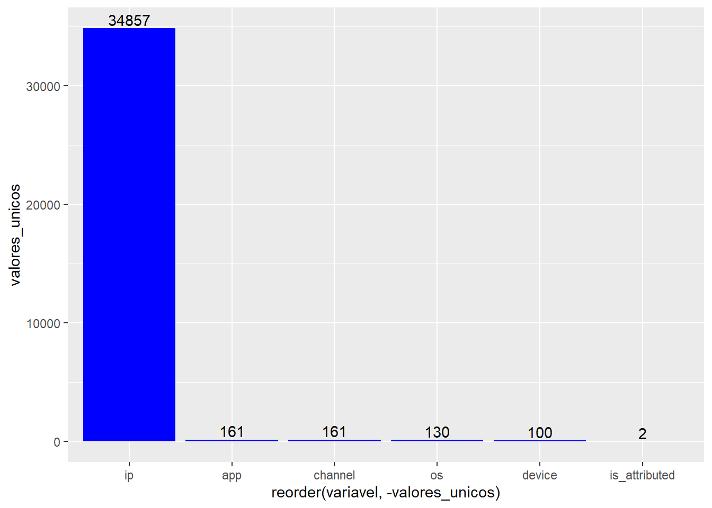
Podemos perceber uma enorme quantidade de IPs únicos. Importante notar que a variável que iremos prever possui apenas 2 valores únicos, que é o comportamento esperado.
Em problemas de classificação, é importante que a variável a ser prevista esteja balanceada, ou seja, a quantidade de valores 0 e de valores 1 em ‘is_attributed’ deve ser parecida.
ggplot(data, aes(is_attributed)) + geom_bar(fill = 'cornsilk2') +
stat_count(geom = "text", colour = "black", size = 5,
aes(label = ..count..),position=position_stack(vjust=0.5))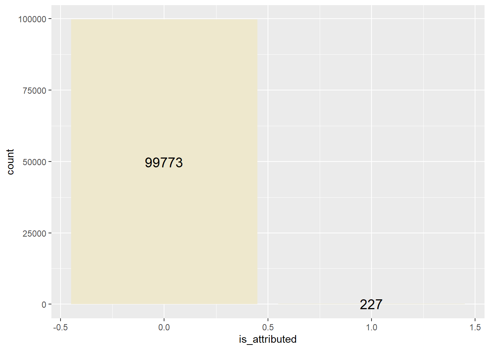
Percebemos uma enorme necessidade de balancear os dados.Podemos fazer isso reduzindo nossa amostra onde ‘is_attributed’ for 0 ou criando dados em que ‘is_attributed’ é 1. Como temos acesso a uma quantidade muito grande de dados, usaremos uma técnica de downsample
yes <- which(data$is_attributed == 1)
no <- which(data$is_attributed == 0)
not_downloaded_sample <- sample(no, length(yes))
data = data[c(not_downloaded_sample,yes),]ggplot(data, aes(is_attributed)) + geom_bar(fill = 'cornsilk2') +
stat_count(geom = "text", colour = "black", size = 5,
aes(label = ..count..),position=position_stack(vjust=0.5))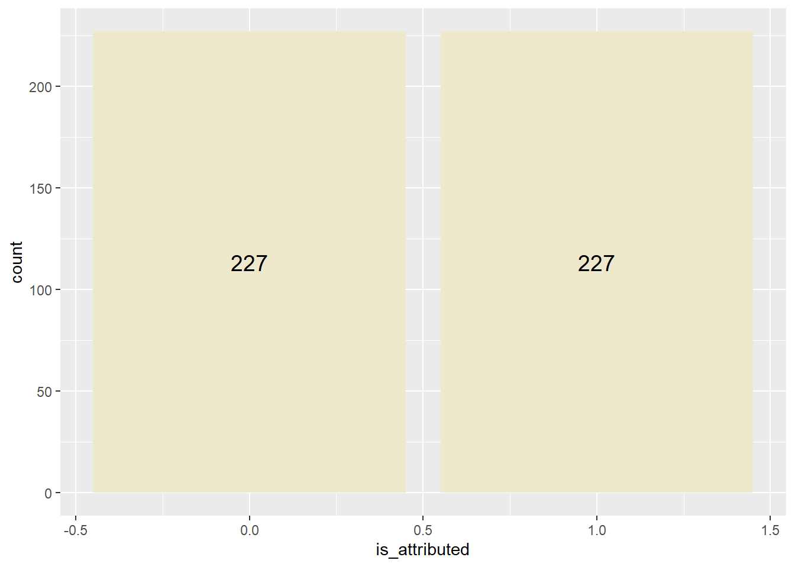
Agora sim a variável target está balanceada.
data$dayweek = wday(data$click_time)
data$hour = hour(data$click_time)kable(head(data[,c('click_time','dayweek','hour')]))| click_time | dayweek | hour |
|---|---|---|
| 2017-11-09 01:27:11 | 5 | 1 |
| 2017-11-07 19:14:02 | 3 | 19 |
| 2017-11-08 06:39:30 | 4 | 6 |
| 2017-11-07 11:03:39 | 3 | 11 |
| 2017-11-07 11:48:26 | 3 | 11 |
| 2017-11-08 02:38:46 | 4 | 2 |
data2 = subset(data, data$is_attributed == 1)data2$delay = as.numeric(data2$attributed_time - data2$click_time)mean(data2$delay/60)## [1] 74.99288sd(data2$delay/60)## [1] 145.0899hist(data2$delay, breaks = 10, col = 'lightblue')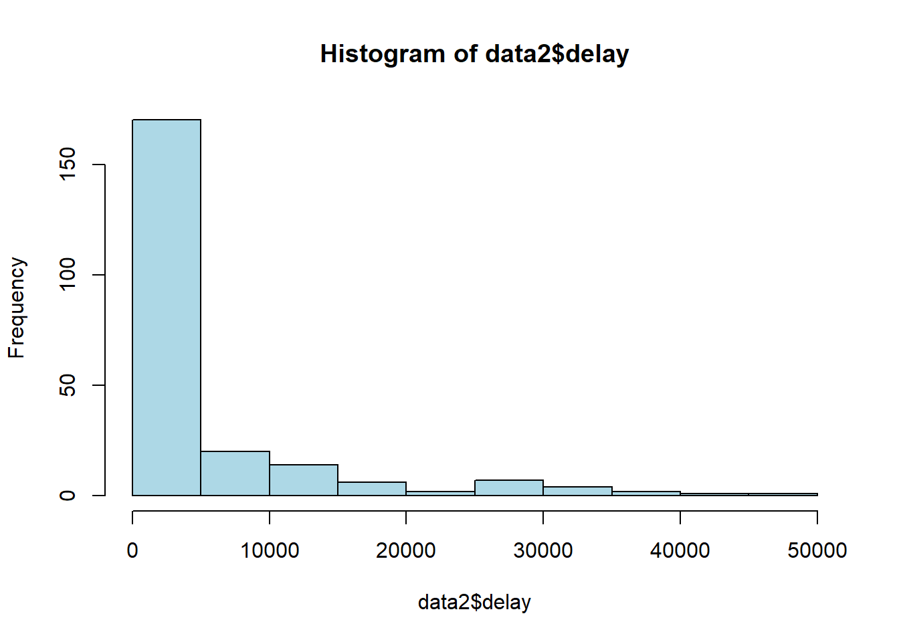
delay_under10 = subset(data2, select = delay, subset = delay<600 )
mean(delay_under10$delay/60)## [1] 1.780224sd(delay_under10$delay/60)## [1] 1.927303hist(delay_under10$delay, breaks = 10, col = 'lightblue')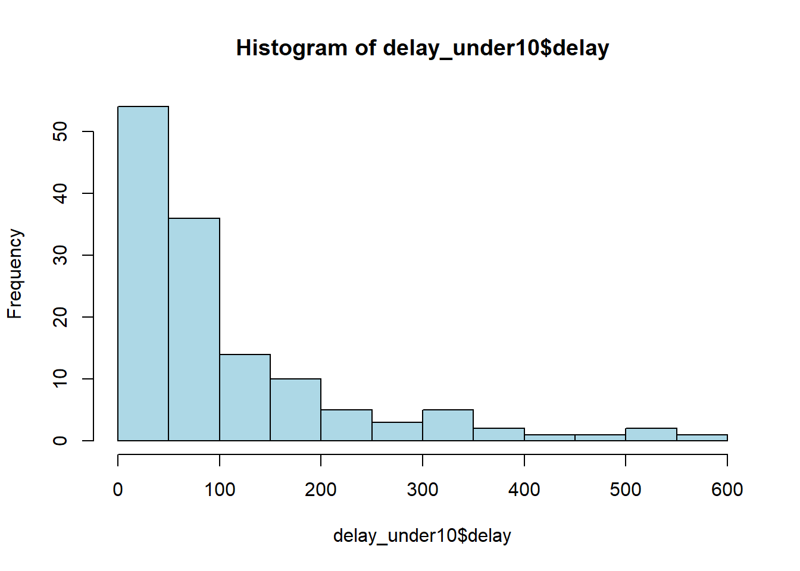
a = nrow(data2)
b = nrow(data)
a/b*100## [1] 50c = subset(data2, subset = data2$delay < 120)
d = nrow(c)
d/a*100## [1] 42.73128max(data$click_time) - min(data$click_time)## Time difference of 2.943634 daysdata %>%
group_by(hour) %>%
summarise(downloadsRealized = sum(is_attributed),
unrealizedDownloads = sum(!is_attributed)) %>%
ggplot(x = factor(hour)) +
geom_line(aes(x = hour, y = downloadsRealized, color = 'Sim')) +
geom_line(aes(x = hour, y = unrealizedDownloads, color = 'Não')) +
theme_bw(base_size = 15) +
theme(axis.text.x = element_text(angle = 60, hjust = 1)) +
xlab('Hora') +
ylab('Quantidade de cliques') +
labs(title = 'Análise temporal de cliques', colour = 'Downloaded')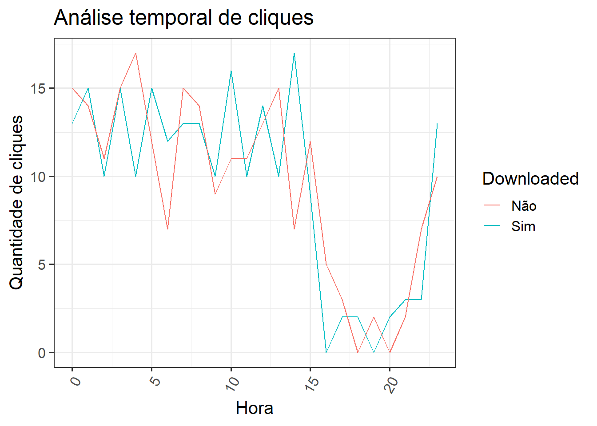
ip_downloaded = data %>% select(c('ip', 'is_attributed')) %>% filter(is_attributed == 1) %>% distinct()ip_not_donwloaded = data %>% select(c('ip', 'is_attributed')) %>% filter(is_attributed == 0) %>% distinct()ip_both = ip_downloaded %>% inner_join(ip_not_donwloaded , by = 'ip')
count(ip_downloaded)## n
## 1: 223count(ip_not_donwloaded)## n
## 1: 219count(ip_both)## n
## 1: 4É possível perceber que uma quantidade extremamente baixa de IPs foi responsável por cliques fraudulentos e cliques não fraudulentos. Assim, percebemos que o mesmo IP costuma ter o mesmo comportamento, seja fraudar o clique ou não.
ip_only_downloaded = ip_downloaded %>% anti_join(ip_both)## Joining, by = "ip"ip_only_not_downloaded = ip_not_donwloaded %>% anti_join(ip_both)## Joining, by = "ip"total_IP = count(ip_downloaded) + count(ip_not_donwloaded) - count(ip_both)
count(ip_only_downloaded) / total_IP *100## n
## 1: 50count(ip_only_not_downloaded) / total_IP *100## n
## 1: 49.08676O total de Ips que nunca resultaram em cliques fraudulentos é de 50 % . Já o total que sempre resultou em clique fraudulento é de 49.086758 %
data$attributed_time = NULL
data$click_time = NULL
data$ip = NULL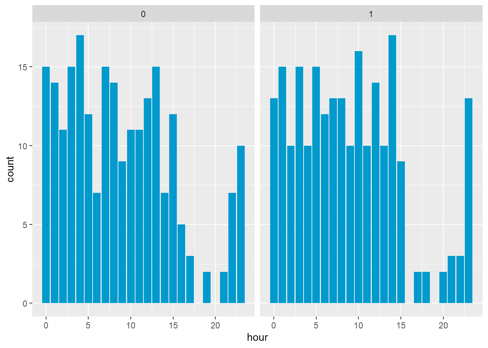
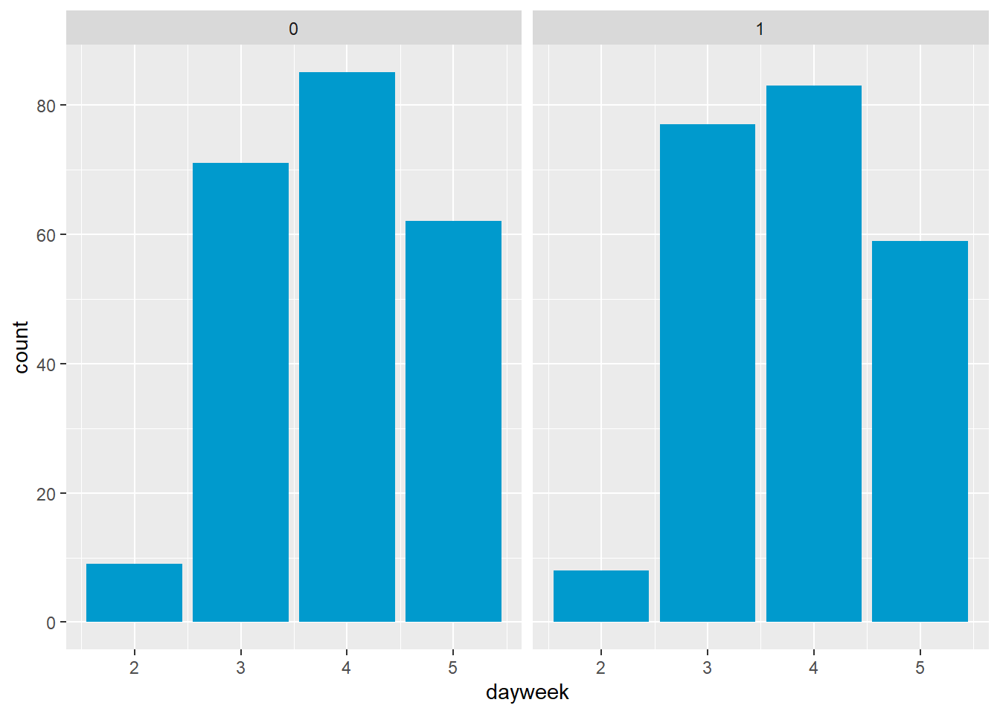
## `stat_bin()` using `bins = 30`. Pick better value with `binwidth`.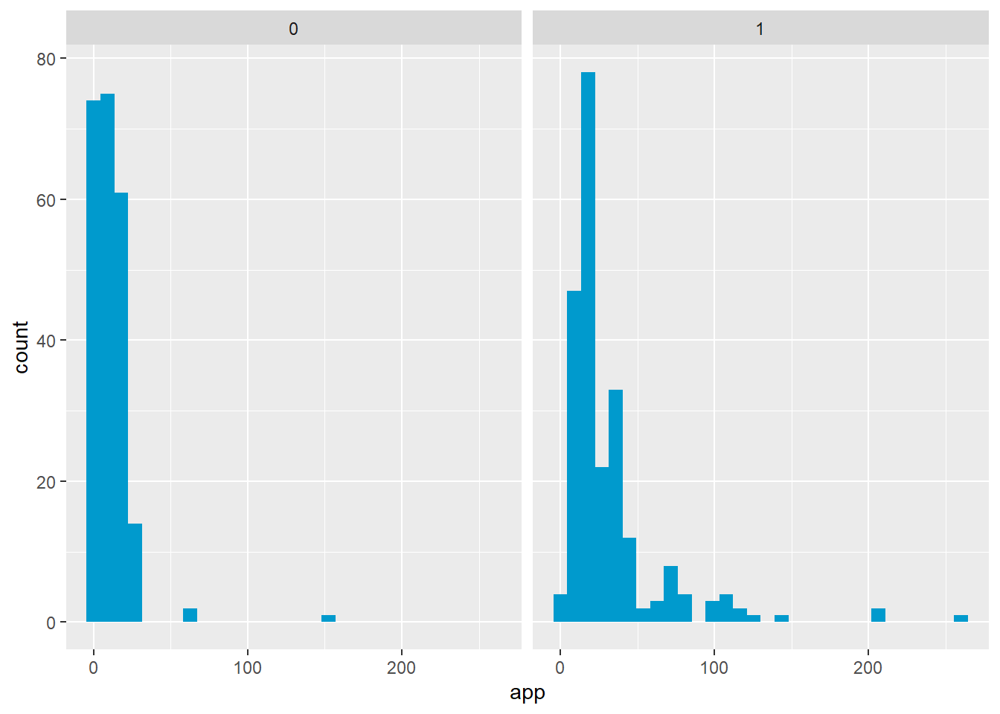
## `stat_bin()` using `bins = 30`. Pick better value with `binwidth`.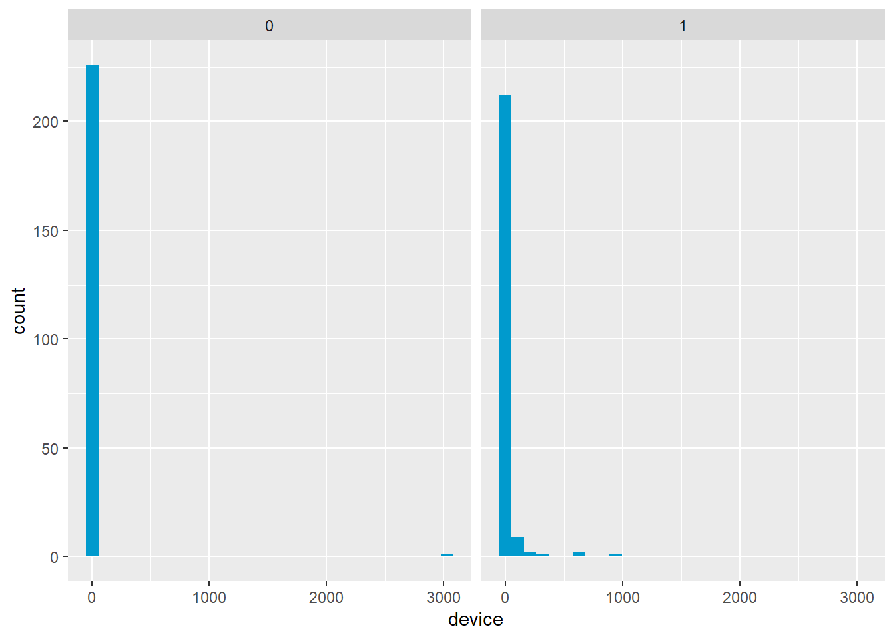
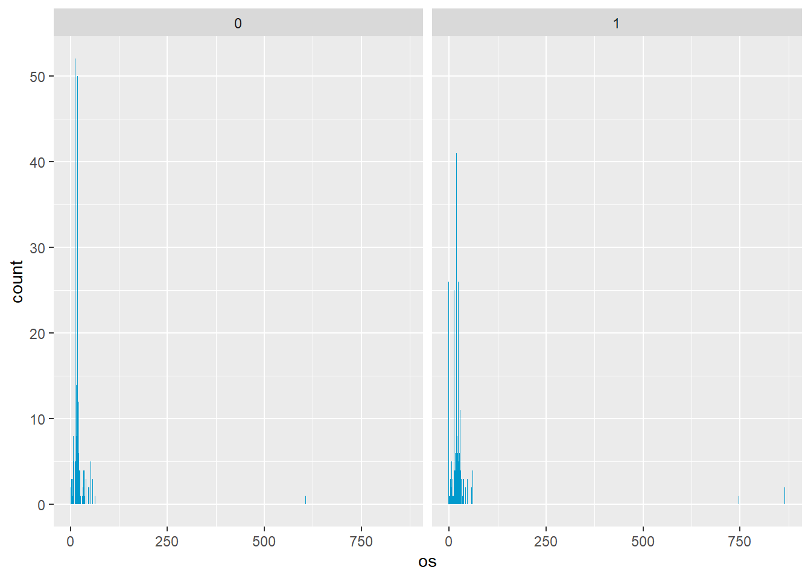
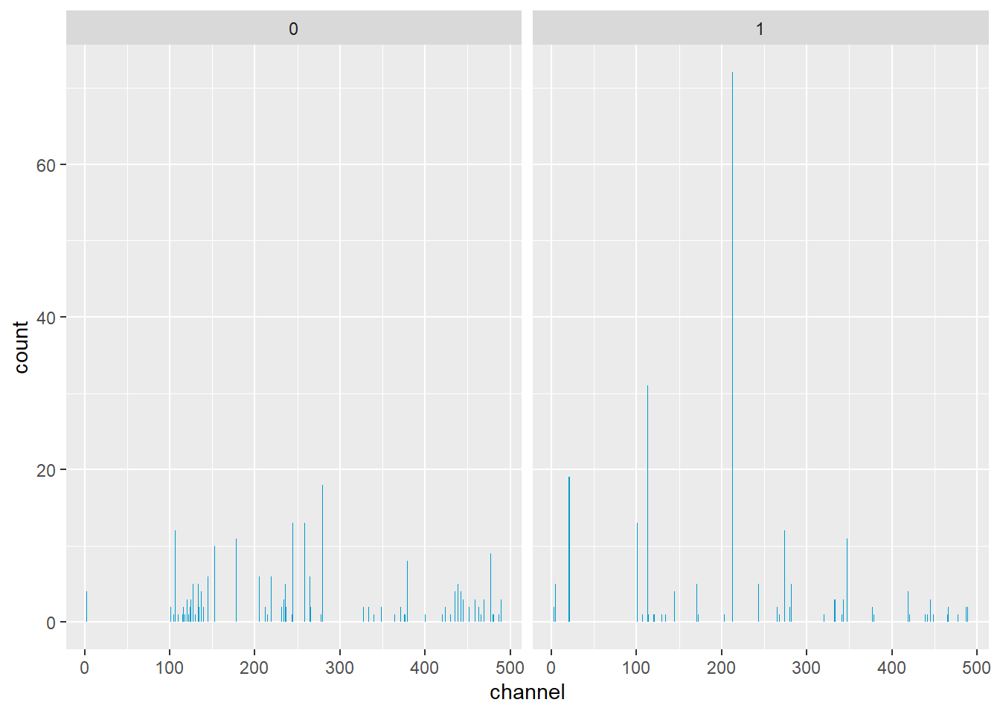
selection <- randomForest(is_attributed ~.,
data = data,
ntree = 100, nodesize = 10, importance = T)## Warning in randomForest.default(m, y, ...): The response has five or fewer
## unique values. Are you sure you want to do regression?varImpPlot(selection)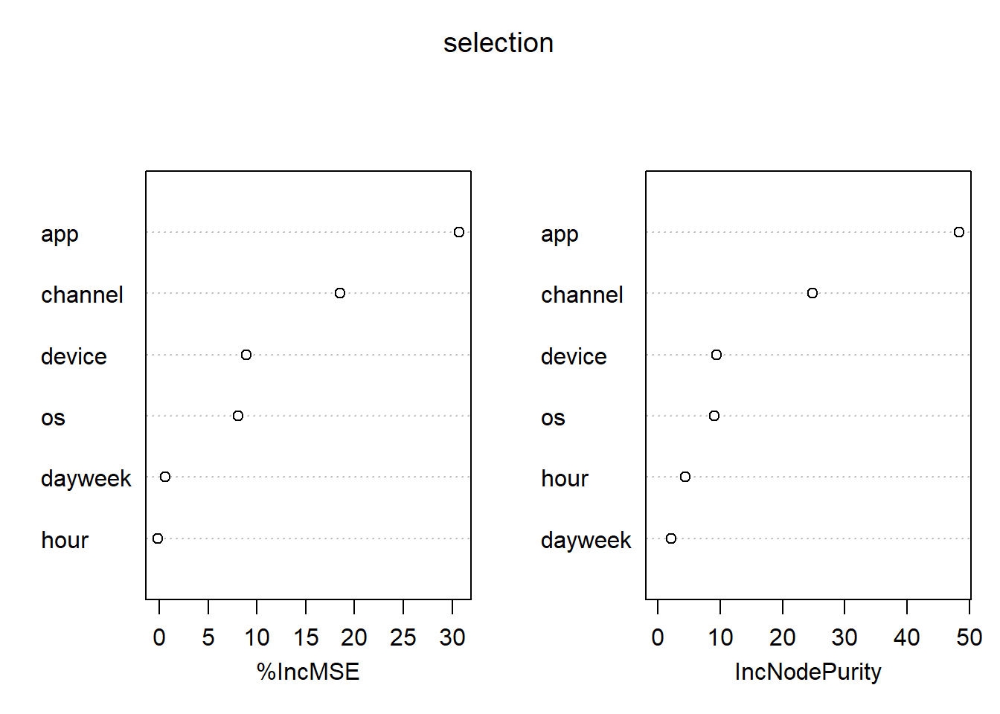
A partir do modelo de random forest e da visualização dos gráficos, determinou-se como variáveis fracas: day_week e hour
data_3 = data
data_3$dayweek = NULL
data_3$hour =NULLdata_nn <- datasample <- sample.int(n = nrow(data_nn), size = floor(.7*nrow(data_nn)), replace = F)
train_sample_nn <- data_nn[sample, ]
test_sample_nn <- data_nn[-sample, ]modelo_1 = neuralnet(is_attributed ~., train_sample_nn , hidden = 3)
plot(modelo_1)previsoes <- data.frame(observado = test_sample_nn$is_attributed,
previsto = predict(modelo_1, newdata = test_sample_nn))
previsoes$previsto <- ifelse (previsoes$previsto > 0.5, 1, 0)confusionMatrix(table(previsoes$observado, previsoes$previsto))## Confusion Matrix and Statistics
##
##
## 0 1
## 0 72 1
## 1 49 15
##
## Accuracy : 0.635
## 95% CI : (0.5485, 0.7156)
## No Information Rate : 0.8832
## P-Value [Acc > NIR] : 1
##
## Kappa : 0.2314
##
## Mcnemar's Test P-Value : 2.995e-11
##
## Sensitivity : 0.5950
## Specificity : 0.9375
## Pos Pred Value : 0.9863
## Neg Pred Value : 0.2344
## Prevalence : 0.8832
## Detection Rate : 0.5255
## Detection Prevalence : 0.5328
## Balanced Accuracy : 0.7663
##
## 'Positive' Class : 0
## data_nn_2 <- data_3
sample <- sample.int(n = nrow(data_nn_2), size = floor(.7*nrow(data_nn_2)), replace = F)
train_sample_nn_2 <- data_nn_2[sample, ]
test_sample_nn_2 <- data_nn_2[-sample, ]modelo_2 = neuralnet(is_attributed ~., train_sample_nn_2 , hidden = 3 )
#previsões
previsoes2 <- data.frame(observado = test_sample_nn_2$is_attributed,
previsto = predict(modelo_2, newdata = test_sample_nn_2))
previsoes2$previsto <- ifelse (previsoes2$previsto > 0.5, 1, 0)confusionMatrix(table(previsoes2$observado, previsoes2$previsto))## Confusion Matrix and Statistics
##
##
## 0 1
## 0 64 0
## 1 64 9
##
## Accuracy : 0.5328
## 95% CI : (0.4457, 0.6185)
## No Information Rate : 0.9343
## P-Value [Acc > NIR] : 1
##
## Kappa : 0.1161
##
## Mcnemar's Test P-Value : 3.407e-15
##
## Sensitivity : 0.5000
## Specificity : 1.0000
## Pos Pred Value : 1.0000
## Neg Pred Value : 0.1233
## Prevalence : 0.9343
## Detection Rate : 0.4672
## Detection Prevalence : 0.4672
## Balanced Accuracy : 0.7500
##
## 'Positive' Class : 0
## sample <- sample.int(n = nrow(data), size = floor(.7*nrow(data)), replace = F)
train_sample <- data[sample, ]
test_sample <- data[-sample, ]
modelo_3 <- randomForest(is_attributed ~.,
data = train_sample,
ntree = 100, nodesize = 10)## Warning in randomForest.default(m, y, ...): The response has five or fewer
## unique values. Are you sure you want to do regression?previsoes3 <- data.frame(observado = test_sample$is_attributed,
previsto = predict(modelo_3, newdata = test_sample))
previsoes3$previsto <- ifelse (previsoes3$previsto > 0.5, 1, 0)confusionMatrix(table(previsoes3$observado, previsoes3$previsto))## Confusion Matrix and Statistics
##
##
## 0 1
## 0 62 5
## 1 6 64
##
## Accuracy : 0.9197
## 95% CI : (0.8609, 0.9592)
## No Information Rate : 0.5036
## P-Value [Acc > NIR] : <2e-16
##
## Kappa : 0.8394
##
## Mcnemar's Test P-Value : 1
##
## Sensitivity : 0.9118
## Specificity : 0.9275
## Pos Pred Value : 0.9254
## Neg Pred Value : 0.9143
## Prevalence : 0.4964
## Detection Rate : 0.4526
## Detection Prevalence : 0.4891
## Balanced Accuracy : 0.9197
##
## 'Positive' Class : 0
## sample <- sample.int(n = nrow(data_3), size = floor(.7*nrow(data_3)), replace = F)
train_sample <- data_3[sample, ]
test_sample <- data_3[-sample, ]
modelo_4 <- randomForest(is_attributed ~.,
data = train_sample,
ntree = 100, nodesize = 15)## Warning in randomForest.default(m, y, ...): The response has five or fewer
## unique values. Are you sure you want to do regression?previsoes4 <- data.frame(observado = test_sample$is_attributed,
previsto = predict(modelo_4, newdata = test_sample))
previsoes4$previsto <- ifelse (previsoes4$previsto > 0.5, 1, 0)confusionMatrix(table(previsoes4$observado, previsoes4$previsto))## Confusion Matrix and Statistics
##
##
## 0 1
## 0 58 2
## 1 16 61
##
## Accuracy : 0.8686
## 95% CI : (0.8003, 0.9202)
## No Information Rate : 0.5401
## P-Value [Acc > NIR] : < 2.2e-16
##
## Kappa : 0.7398
##
## Mcnemar's Test P-Value : 0.002183
##
## Sensitivity : 0.7838
## Specificity : 0.9683
## Pos Pred Value : 0.9667
## Neg Pred Value : 0.7922
## Prevalence : 0.5401
## Detection Rate : 0.4234
## Detection Prevalence : 0.4380
## Balanced Accuracy : 0.8760
##
## 'Positive' Class : 0
## e-mail: pabloaguiar92@hotmail.com
linkedin: https://www.linkedin.com/in/pablo-aguiar-raposo-71b6b5139/ github: https://github.com/Pablo-aguiarr